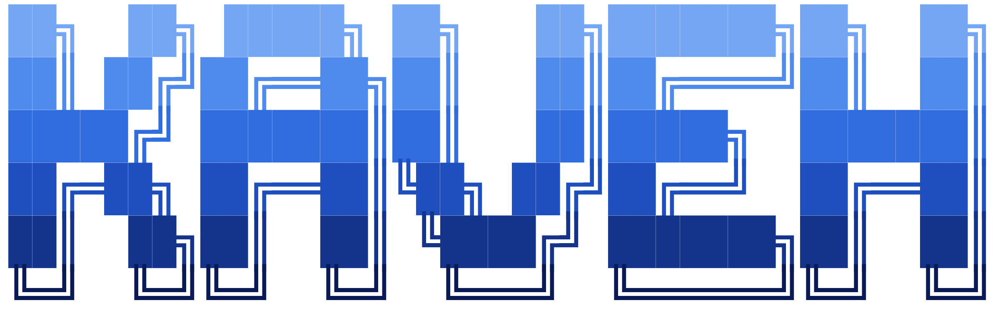

$ render_name --text KAVEH --style block-logo --gradient logo

Lead Staff Software Engineer
Data, ML & GenAI Systems
Spark · Airflow · AWS · Agentic AI Workflows
$ cat ./identity.ts
const kaveh = {
role: "Lead Staff Software Engineer | Data, ML & GenAI Engineering",
experience: "15+ years building software; 12+ at Comscore",
trajectory: "large-scale data engineering → ML systems & agentic AI workflows",
education: [
"M.Eng Computer Science (ML) @ Virginia Tech",
"M.Sc Software Engineering @ George Mason University"
],
currentFocus: [
"production Scala/Spark pipelines", "AI-assisted migration workflows",
"RAG/LLM systems and evaluation", "open-source ML/data platforms"
],
operatingMode: "prove parity, automate delivery, keep the architecture legible"
};
$ ./mission --current
▸Building production data, ML, and GenAI systems that validate and automate legacy workflows.